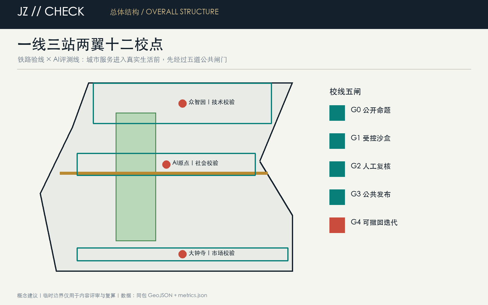
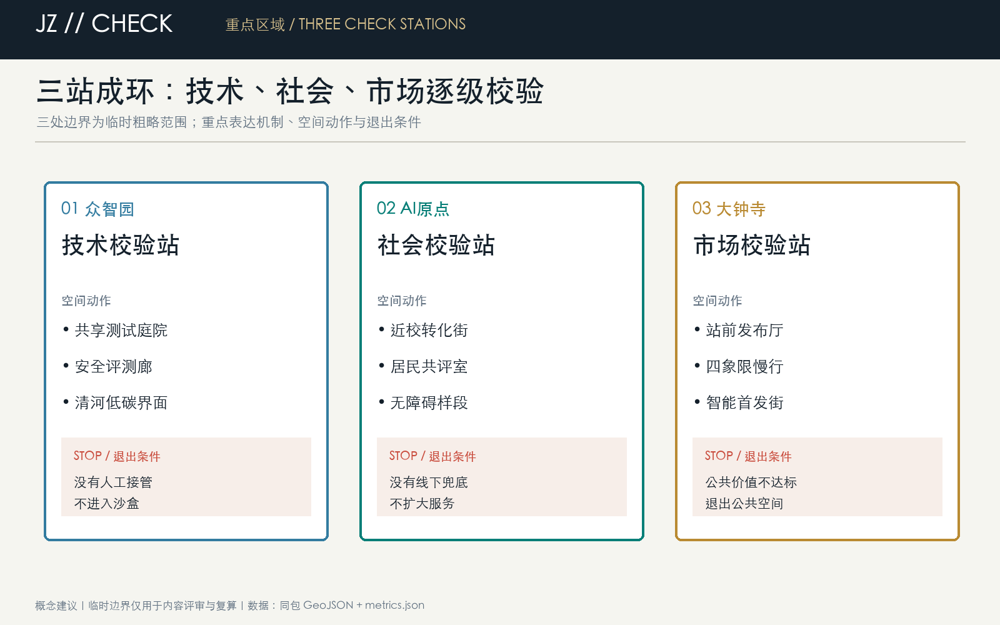
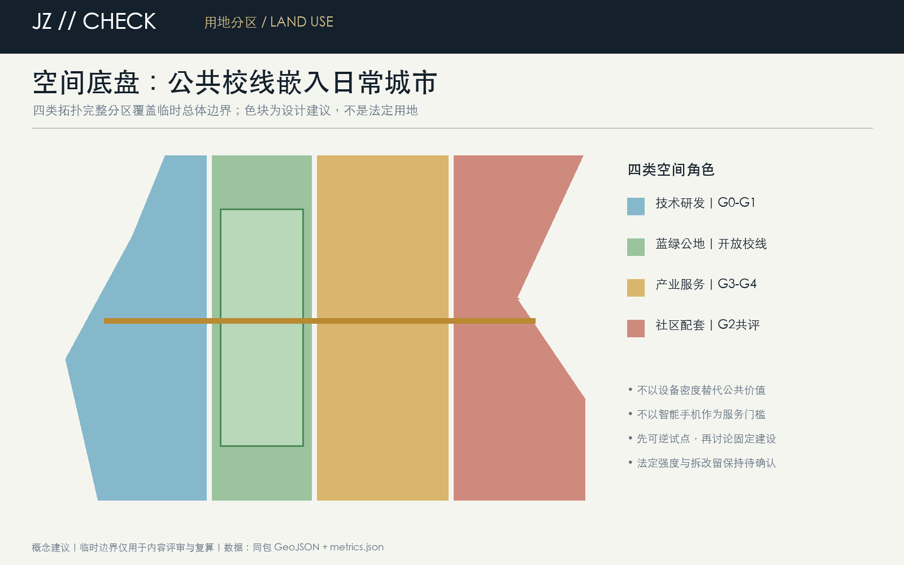
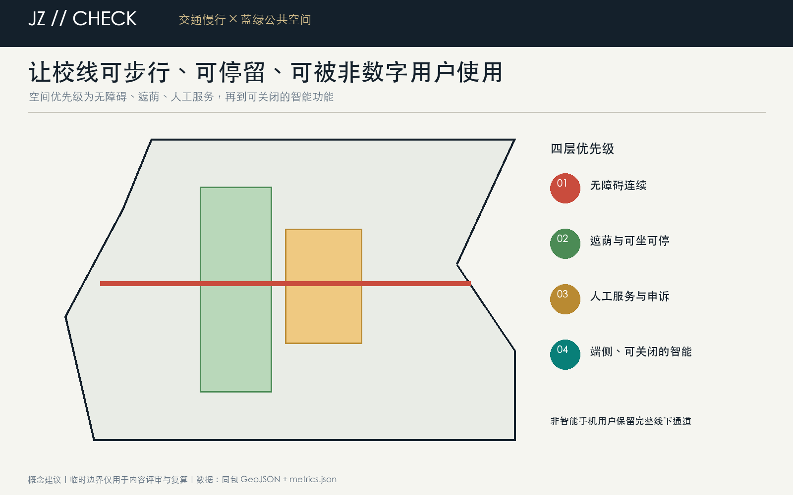

众智园｜技术校验
共享测试庭院、安全评测廊、清河低碳界面。
没有人工接管，不进入沙盒。
城市上线之前，先沿京张校线。铁路需要验线，AI进入真实城市也要经过公开命题、受控沙盒、人工复核、公共发布和可撤回迭代。
一线三站两翼十二校点：统筹研究、总体设计和三处重点区域由同一校线机制贯通。

面积来自提交几何在 EPSG:4548 下复算；内容数量来自正式方案与机器可读指标。
众智园做技术校验，AI原点社区做社会校验，大钟寺做市场校验；每站均设置停止条件。

共享测试庭院、安全评测廊、清河低碳界面。
没有人工接管，不进入沙盒。
近校转化街、居民共评室、无障碍样段。
没有线下兜底，不扩大服务。
站前发布厅、四象限慢行、智能首发街。
公共价值不达标，退出公共空间。
每一步都有责任人、公开记录、人工复核和退出决定。
先无障碍、遮荫和人工服务，再部署端侧、可关闭的智能功能；建筑与更新项目均为概念建议。


12张场景卡都记录空间载体、最小数据、人工责任、停止条件与申诉入口。
成果与失败记录同步公开。
预约、围合、可人工接管。
原始个人数据不外传。
聚合数据与人工走查。
结果与退出决定公开。
能源与生态约束先行。
高校成果须经授权。
不展示未清权数据。
关键服务保留人工通道。
专业与社区共同复核。
残障人士与照护者参与共评。
异常即停、远程监护。
六个先导项目均设置建议主体、阶段闸门、依赖条件和结果指标；公告任务及 agent.1-agent.6 均映射到证据链。
官方公告、agent任务书、官方评审细则、专业标准本地快照、来源登记和临时边界推定说明。
官方边界、控规、权属、道路、市政、文保和工程条件待补。确定性校验、空间复核、视觉包装和专业证据审查均须 PASS。
所有指标与图件以同包机器可读文件为准。